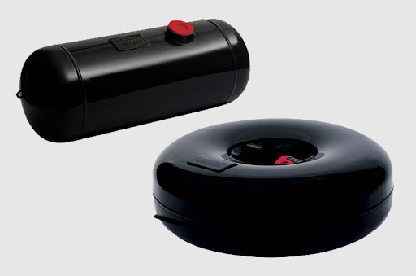
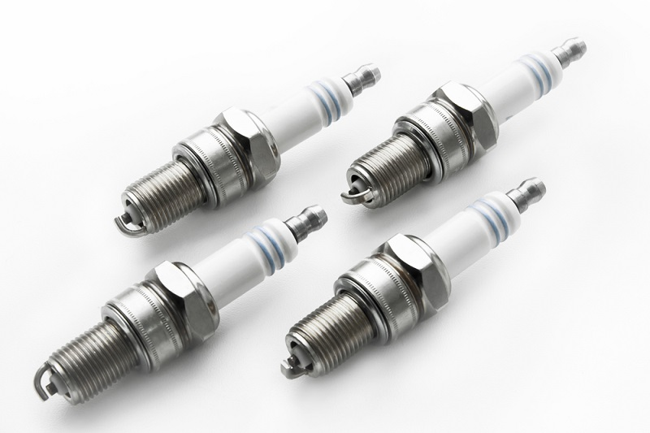
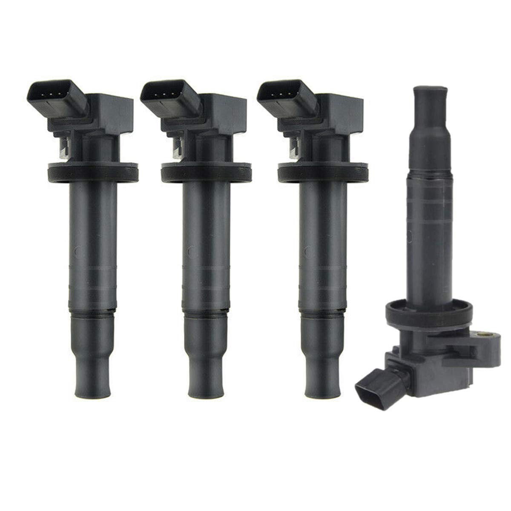
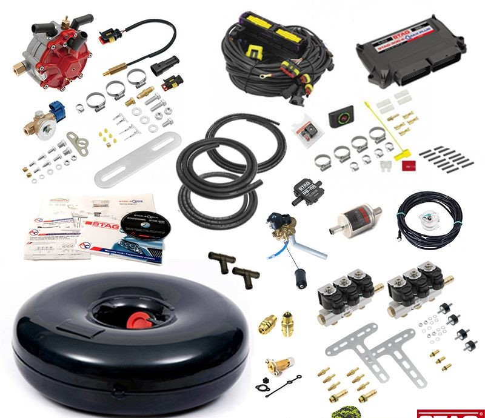

Tanques GLP
Los tanques de GLP (Gas Licuado de Petróleo) vehicular son componentes críticos para el almacenamiento seguro y eficiente del GLP en automóviles convertidos para usar este combustible alternativo. Están fabricados con materiales robustos, como acero o aluminio, capaces de soportar altas presiones. Disponibles en varios tamaños y capacidades, estos tanques aseguran una autonomía adecuada para diferentes tipos de vehículos.
Bujias de encendido
Las bujías de encendido son componentes esenciales en los motores de combustión interna, responsables de encender la mezcla de aire y combustible dentro de los cilindros. Cada bujía genera una chispa eléctrica que provoca la combustión, impulsando el motor.
filtros
Los filtros son componentes esenciales en diversos sistemas de un vehículo, diseñados para eliminar contaminantes y asegurar un funcionamiento eficiente y prolongado de diferentes partes del automóvil. Los principales tipos de filtros en un vehículo son: Filtro de Aire, Filtro de Aceite, Filtro de Combustible,

Bobinas
Las bobinas de encendido son componentes esenciales del sistema de encendido en los vehículos. Su función principal es convertir la baja tensión de la batería en alta tensión, necesaria para generar una chispa en las bujías que enciende la mezcla de aire y combustible en los cilindros del motor.
Bomba de gasolina
La bomba de gasolina es un componente crucial del sistema de combustible en los vehículos. Su función principal es suministrar
el combustible desde el tanque hasta el motor a la presión adecuada para asegurar un funcionamiento eficiente y continuo del motor.
Existen dos tipos principales de bombas de gasolina: las mecánicas y las eléctricas.
Bomba Mecánica: Utilizada principalmente en vehículos más antiguos, esta bomba es accionada por el motor y está montada en el bloque
del motor o en la culata.
Bomba Eléctrica: Común en los vehículos modernos, esta bomba está ubicada dentro del tanque de combustible o cerca de él, proporcionando
un flujo constante de combustible bajo diferentes condiciones de operación.
Equipo completo
Los equipos completos de GLP (Gas Licuado de Petróleo) para vehículos permiten la conversión de motores de gasolina para funcionar con GLP, un combustible alternativo más económico y ecológico. Estos equipos incluyen varios componentes clave que trabajan juntos para asegurar un suministro seguro y eficiente de GLP al motor del vehículo.
